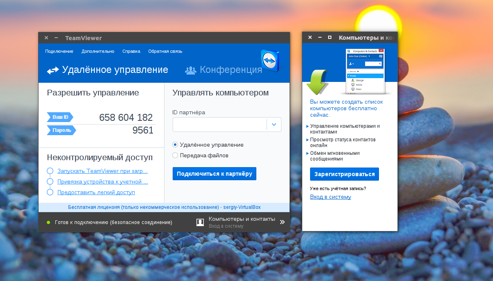

Главная
Лучшие программы для Ubuntu
Лучшие программы для Ubuntu

TeamViewer - отличная программа для удалённого управления компьютером. Соединение устанавливается не прямо между компьютерами, а через сервер программы, поэтому она может работать несмотря на NAT и другие ограничения. Вы вводите ID машины, пароль и оказываетесь на её рабочем столе. Есть приложение для Android и iOS, а также версия программы для Windows и Linux. Устанавливаем программу с официального сайта:
wget http://download.teamviewer.com/download/teamviewer_i386.deb
$ sudo gdebi teamviewer_linux.deb